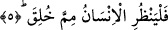

kendi nefsi ile başbaşa bırakılsaydı şeytanlar onu hemen kaparlardı.” [67]
Yukarda okuduğumuz âyette yer alan “lemmâ” ifâdesi “lema” şeklinde de okunmuştur.
Bu takdirde “in”, “inne”den muhaffefe yâni onun şeddesizi olmuş olur. “Ma” ise mezîd,
“lam”a gelince bu da muhaffefe ile nâfiye arasını birbirinden ayıran lam olmuş olur.
Bu açıklamalardan sonra âyete mânâ verirsek şöyle denmiş olur: Durum şudur ki her
nefsin kendisini gözetleyen, denetleyen, amellerini yazıp koruma altına alan bir
“hâfız/denetleyici”sı vardır.
Bu âyet-i kerime nefisleri zararlı şeyleri yapmama noktasında korkutmakta, faydalı
şeyleri yapmaları için teşvikte bulunmaktadır. Bazı tefsirlerde şu açıklamayı görüyoruz:
Okuduğumuz âyette yer alan “nefis” kelimesinden maksad gerek insan, gerek cin
mükellef olan nefislerden daha genel bir anlam ifâde etmektedir. Çünkü muhafaza yâni
koruma kelimesi bazı açılardan genellik ifâde etmektedir. Böylece âyette geçen “nefis”
kelimesi mutlak olarak canlı olan her nefse şâmil olmaktadır. Hatta nefis kelimesinden
maksad zat olduğu düşünülürse Allah’tan başka herşeye şâmil olmaktadır. Çünkü
herşeyin nefsi demek zâtı demek, zâtı ise nefsi demektir. Bu durumda aynı âyette yer
alan “hâfız” kelimesinden maksad ise Allah Teâlâ olmuş olur. Çünkü herşeyi koruyan,
denetleyen, muhafaza eden onun içyüzünü, ahvalini bilen, o şeyi kendisine yararlı olan
hususlara ulaştıran, zararlı olanlarından müdâfâ edip, savunandır.
Kulların içerisinde hâfız olan ise organlarını, kalbini koruyan, dinini gazabın
hücumundan, şehvetin tadından, nefsin aldatmasından, şeytanın vereceği aldatıcı
vesveselerden koruyan kimsedir. Çünkü kişi dâima uçurumun kenarındadır. Kendisini
felakete sürükleyen bu güçlerle kuşatılmış durumdadır.
Yeri gelmişken bu “Hafîz” isminin bir özelliğine temas edelim: Her kim bu “el-Hafîz”
ismini yazıp üzerinde taşır, vücuduna asarsa yırtıcı hayvanların arasında uyusa bile o
hayvanlar kendisine zarar veremezler.
Kâşânî şöyle diyor: Âyette geçen “hâfız” kelimesinden maksad -nefis kelimesiyle
bütün nefisler kasdediliyorsa- Allah’tır. Eğer bununla bildiğimiz hayvâni kuvvetler
kasdediliyorsa o zaman bu kuvvetlerin hâfızı da insan ruhudur.
5. İnsan neden yaratıldığına bir baksın!
“İnsan neden” hangi şeyden “yaratıldığına bir baksın!” Yani cehâletten, nisyandan,
mürekkeb olan ve öldükten sonra dirilmeyi mahşer yerinde toplanmayı, mizanı inkâr
eden insanoğlu hangi şeyden yaratıldığı noktasında kafa yorsun, onların üzerinde
düşünsün.
Âyette yer alan “mimme” kelimesinin aslı “min+ma” şeklindedir ancak ifâdede
kolaylık olsun diye ma’nın sonundaki elif atılmıştır. Nitekim buna benzer açıklama
“amme” sûresinde geçmişti.
İnsanoğlu yaratıldığı nesne üzerinde düşünsün ki, kendisine hayatın kokusu bile